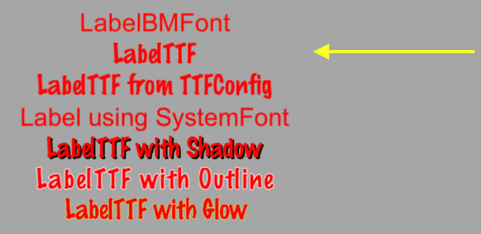
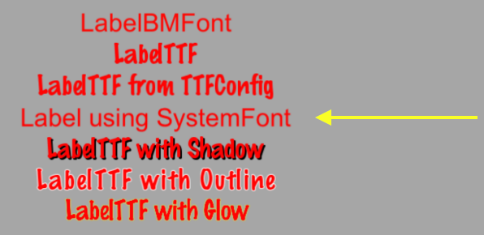
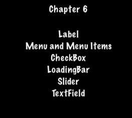
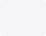
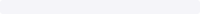
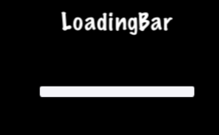
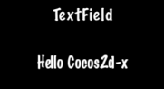

UI Components
Taking a look at the common apps you might use, I bet that you can spot UI widgets without necessarily knowing what they are. They aren't specific to games, every application probably uses a few widgets. What does UI stand for? What do UI widgets do? Oh so many questions!
Widgets, oh, my!
UI is an abbreviation that stands for user interface. You know, things that
are on the screen. This include items like: labels, buttons, menus,
sliders and views. Cocos2d-x provides a set of UI widgets to make it
simple to add these controls to your projects. It may sound trivial, but a lot
goes in to creating a core class like a Label. There are so many aspects of
just this one. Could you imagine having to write your own custom widget set? Don't
worry, your needs are covered!
Label
Cocos2d-x provides a Label object that can create labels using true type,
bitmap or the built-in system font. This single class can handle all your Label
needs.
Label BMFont
BMFont is a label type that uses a bitmap font. The characters in a bitmap font
are made up of a matrix of dots. It is very fast and easy to use, but not
scalable as it requires a separate font for each size character. Each character
in a Label is a separate Sprite. This means that each character can be rotated,
scaled, tinted, have a different anchor point and/or most any other property changed.
Creating a BMFont label requires two files: a .fnt file and an image
representation of each character in .png format. If you are using a tool like
Glyph Designer these files are created automatically for you. Creating a
Label object from a bitmap font:
auto myLabel = Label::createWithBMFont("bitmapRed.fnt", "Your Text");

All of the characters in the string parameter should be found in the provided
.fnt file, otherwise they won't be rendered. If you render a Label object and
it is missing characters, make sure they exist in your .fnt file.
Label TTF
True Type Fonts are different from the bitmap fonts we learned about above.
With true type fonts the outline of the font is rendered. This is convenient
as you do not need to have a separate font file for each size and color you might
wish to use. Creating a Label object that uses a true type font is easy. To
create one you need to specify a .ttf font file name, text string and a size.
Unlike BMFont, TTF can render size changes without the need for a separate
font files. Example, using a true type font:
auto myLabel = Label::createWithTTF("Your Text", "Marker Felt.ttf", 24);

Although it is more flexible than a bitmap font, a true type font is slower to render and changing properties like the font face and size is an expensive operation.
If you need several Label objects from a true type font that all have the
same properties you can create a TTFConfig object to manage them. A TTFConfig
object allows you to set the properties that all of your labels would have in
common. You can think of this like a recipe where all your Label objects
will use the same ingredients.
You can create a TTFConfig object for your Labels in this way:
// create a TTFConfig files for labels to share
TTFConfig labelConfig;
labelConfig.fontFilePath = "myFont.ttf";
labelConfig.fontSize = 16;
labelConfig.glyphs = GlyphCollection::DYNAMIC;
labelConfig.outlineSize = 0;
labelConfig.customGlyphs = nullptr;
labelConfig.distanceFieldEnabled = false;
// create a TTF Label from the TTFConfig file.
auto myLabel = Label::createWithTTF(labelConfig, "My Label Text");

A TTFConfig can also be used for displaying Chinese, Japanese and Korean
characters.
Label SystemFont
SystemFont is a label type that uses the default system font and font size.
This is a font that is meant not to have its properties changed. You should think
of it as system font, system rules. Creating a SystemFont label:
auto myLabel = Label::createWithSystemFont("My Label Text", "Arial", 16);

Label Effects
After you have your Label objects on screen you might want to make them a bit
prettier. Perhaps they look flat or plain. Thankfully you don't have to create
your own custom fonts! Label objects can have effects applied to them. Not all
Label objects support all effects. Some effects include shadow, outline
and glow. You can apply one or more effects to a Label object easily:
Label with a shadow effect:
auto myLabel = Label::createWithTTF("myFont.ttf", "My Label Text", 16);
// shadow effect is supported by all Label types
myLabel->enableShadow();

Label with a outline effect:
auto myLabel = Label::createWithTTF("myFont.ttf", "My Label Text", 16);
// outline effect is TTF only, specify the outline color desired
myLabel->enableOutline(Color4B::WHITE, 1));

Label with a glow effect:
auto myLabel = Label::createWithTTF("myFont.ttf", "My Label Text", 16);
// glow effect is TTF only, specify the glow color desired.
myLabel->enableGlow(Color4B::YELLOW);

Menu and Menu Items
We are all probably familiar with what a menu is. We see these in every application
we use. In your game you would probably use a Menu object to navigate through
game options. Menus often contain buttons like Play, Quit, Settings and
About, but could also contain other Menu objects for a nested menu system.
A Menu object is a special type of Node object. You can create an empty
Menu object as a place holder for your menu items:
auto myMenu = Menu::create();
As we described options above of Play, Quit, Settings and
About, these are your menu items. A Menu without menu items makes little
sense. Cocos2d-x offers a variety of ways to create your menu items including
by using a Label object or specifying an image to display. Menu items usually
have two possible states, a normal and a selected state. When you tap or click
on the menu item a callback is triggered. You can think of this as a chain
reaction. You tap/click the menu item and it runs the code you specified. A
Menu can have just a single item or many items.
// creating a menu with a single item
// create a menu item by specifying images
auto closeItem = MenuItemImage::create("CloseNormal.png", "CloseSelected.png",
CC_CALLBACK_1(HelloWorld::menuCloseCallback, this));
auto menu = Menu::create(closeItem, NULL);
this->addChild(menu, 1);
A menu can also be created by using a vector of MenuItem objects:
// creating a Menu from a Vector of items
Vector<MenuItem*> MenuItems;
auto closeItem = MenuItemImage::create("CloseNormal.png", "CloseSelected.png",
CC_CALLBACK_1(HelloWorld::menuCloseCallback, this));
MenuItems.pushBack(closeItem);
/* repeat for as many menu items as needed */
auto menu = Menu::createWithArray(MenuItems);
this->addChild(menu, 1);
If you run the sample code for this chapter you will see a Menu containing
Label objects for MenuItems:

Lambda functions as Menu callbacks
Above we just learned that when you click a menu item it triggers a callback. C++11 offers lambda functions and therefore Cocos2d-x takes full advantage of them! A lambda function is a function you write inline in your source code. Lambdas are also evaluated at runtime instead of compile time.
A simple lambda:
// create a simple Hello World lambda
auto func = [] () { cout << "Hello World"; };
// now call it someplace in code
func();
Using a lambda as a MenuItem callback:
auto closeItem = MenuItemImage::create("CloseNormal.png", "CloseSelected.png",
[&](Ref* sender){
// your code here
});
Buttons
I doubt that we need to explain buttons much. We all know them as those things
we click on to make something happen in our games. Perhaps you might use a button
to change scenes or to add Sprite objects into your game play.
A button intercepts a touch event and calls a predefined callback when tapped.
A Button has a normal and selected state. The appearance of the Button can
change based upon it's state. Creating a Button and defining its callback
is simple:
#include "ui/CocosGUI.h"
auto button = Button::create("normal_image.png", "selected_image.png", "disabled_image.png");
button->setTitleText("Button Text");
button->addTouchEventListener([&](Ref* sender, Widget::TouchEventType type){
switch (type)
{
case ui::Widget::TouchEventType::BEGAN:
break;
case ui::Widget::TouchEventType::ENDED:
std::cout << "Button 1 clicked" << std::endl;
break;
default:
break;
}
});
this->addChild(button);
As you can see in the above example we specify a .png image for each of the
possible states the button can be in. A Button is made up of 3 graphics that
might look like this:
 


On screen a Button might look like this:

CheckBox
We are all used to filling out checkboxes on paper forms like job applications
and rental agreements. You can also have checkboxes in your games. Perhaps, you
want to have the ability for your player to make a simple yes or no choice.
You might also hear this referred to as a binary choice (0 and 1). A CheckBox
permits the user to make this type of choice. There are 5 different states a
Checkbox can have: normal, selected and disabled. It is simple to create
a CheckBox:
#include "ui/CocosGUI.h"
auto checkbox = CheckBox::create("check_box_normal.png",
"check_box_normal_press.png",
"check_box_active.png",
"check_box_normal_disable.png",
"check_box_active_disable.png");
checkbox->addTouchEventListener([&](Ref* sender, Widget::TouchEventType type){
switch (type)
{
case ui::Widget::TouchEventType::BEGAN:
break;
case ui::Widget::TouchEventType::ENDED:
std::cout << "checkbox 1 clicked" << std::endl;
break;
default:
break;
}
});
this->addChild(checkbox);
As you can see in the above example we specify a .png image for each of the
possible states the Checkbox can be in. Since there are 5 possible states that
a CheckBox can be in, it is up 5 graphics, one for each of its states. Example
graphics:


On screen a Checkbox might look like this:

LoadingBar
Have you ever played a game where you had to wait while it loaded up all the
content it needed? It probably showed you a bar, filling in as it made progress
accomplishing its task. This is often referred to as a progress bar, status bar
or a loading bar. Creating a LoadingBar:
#include "ui/CocosGUI.h"
auto loadingBar = LoadingBar::create("LoadingBarFile.png");
// set the direction of the loading bars progress
loadingBar->setDirection(LoadingBar::Direction::RIGHT);
this->addChild(loadingBar);
In the above example a loading bar is created and we set the direction it
should fill towards as progress is made. In this case to the right direction.
However, you probably need to change the percentage of the LoadingBar. This is
easily done:
#include "ui/CocosGUI.h"
auto loadingBar = LoadingBar::create("LoadingBarFile.png");
loadingBar->setDirection(LoadingBar::Direction::RIGHT);
// something happened, change the percentage of the loading bar
loadingBar->setPercent(25);
// more things happened, change the percentage again.
loadingBar->setPercent(35);
this->addChild(loadingBar);
As you can see in the above example we specify a .png image for the LoadingBar
objects texture:

On screen a LoadingBar might look like this:

Slider
Sometimes it is necessary to change a value slightly. Perhaps you have a character
and you want to allow the player to adjust the strength of attacking an enemy.
A Slider allows users to set a value by moving an indicator. To create a Slider:
#include "ui/CocosGUI.h"
auto slider = Slider::create();
slider->loadBarTexture("Slider_Back.png"); // what the slider looks like
slider->loadSlidBallTextures("SliderNode_Normal.png", "SliderNode_Press.png", "SliderNode_Disable.png");
slider->loadProgressBarTexture("Slider_PressBar.png");
slider->addTouchEventListener([&](Ref* sender, Widget::TouchEventType type){
switch (type)
{
case ui::Widget::TouchEventType::BEGAN:
break;
case ui::Widget::TouchEventType::ENDED:
std::cout << "slider moved" << std::endl;
break;
default:
break;
}
});
this->addChild(slider);
As you can see in the above example we specify a .png image for each of the
possible states the slider can be in. A Slider is made up of 5 graphics that
might look like this:
 
 


On screen a Slider might look like this:

TextField
What if you wanted the player of your game to type in a special name to call the
main character? Where would they type it into? Yes, a text field, of course.
A TextField widget is used for inputting text. It supports touch event, focus,
percent positioning and percent content size. To create a TextField widget:
#include "ui/CocosGUI.h"
auto textField = TextField::create("","Arial",30);
textField->addTouchEventListener([&](Ref* sender, Widget::TouchEventType type){
std::cout << "editing a TextField" << std::endl;
});
this->addChild(textField);
In this example a TextField is created and a callback specified.
TextField objects are versatile and can meet all of your input needs. Would you
like the user to enter a secret password? Do you need to limit the number of
characters a user can input? TextField objects have this all built-it and much
more! Let's take a look at an example:
#include "ui/CocosGUI.h"
auto textField = TextField::create("","Arial",30);
// make this TextField password enabled
textField->setPasswordEnabled(true);
// set the maximum number of characters the user can enter for this TextField
textField->setMaxLength(10);
textField->addTouchEventListener([&](Ref* sender, Widget::TouchEventType type){
std::cout << "editing a TextField" << std::endl;
});
this->addChild(textField);
On screen a TextField might look like this:

When you are editing a TextField, the onscreen keyboard comes up: